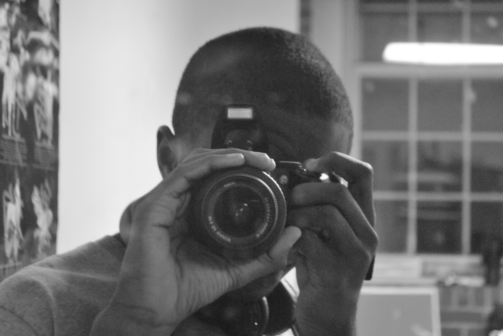
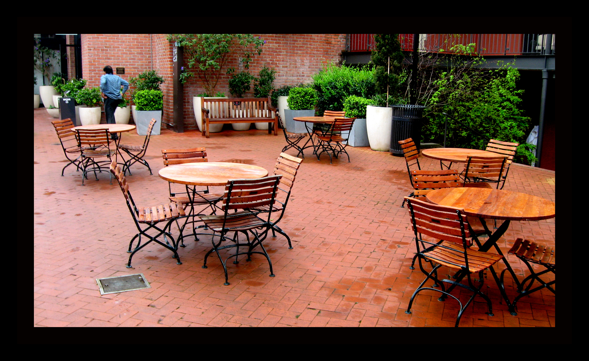

Monday

My first trip to California was life changing.
In California, I got to see a lot of nice places, eat at fancy restaurants, sleep in fancy hotels and also met new people. The experiences from this trip inspired me to aim higher in life and to be the best man I can be.
When I went back to Ohio I felt like I needed to hold on to that feeling because it was good.
In a way I made it my obligation to write about those wonderful experiences in order to keep the
memories alive and also to use that feeling as fuel to power my dreams.
Tuesday
When I went back to Ohio I felt like I needed to hold on to that feeling because it was good. In a way I made it my obligation to write about those wonderful experiences in order to keep the memories alive and also to use that feeling to power my dreams.
Wednesday
When I went back to Ohio I felt like I needed to hold on to that feeling because it was good. In a way I made it my obligation to write about those wonderful experiences in order to keep the memories alive and also to use that feeling to power my dreams.
Thursday
When I went back to Ohio I felt like I needed to hold on to that feeling because it was good. In a way I made it my obligation to write about those wonderful experiences in order to keep the memories alive and also to use that feeling to power my dreams.
Friday
When I went back to Ohio I felt like I needed to hold on to that feeling because it was good. In a way I made it my obligation to write about those wonderful experiences in order to keep the memories alive and also to use that feeling to power my dreams.
Saturday
When I went back to Ohio I felt like I needed to hold on to that feeling because it was good. In a way I made it my obligation to write about those wonderful experiences in order to keep the memories alive and also to use that feeling to power my dreams.
Sunday
When I went back to Ohio I felt like I needed to hold on to that feeling because it was good. In a way I made it my obligation to write about those wonderful experiences in order to keep the memories alive and also to use that feeling to power my dreams.